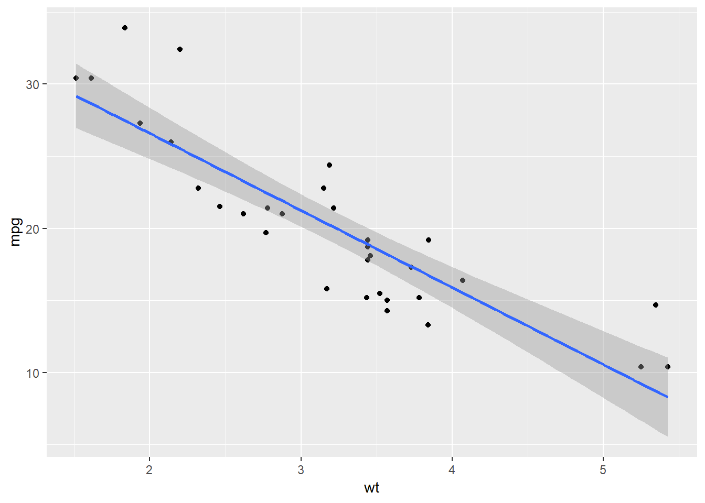

regr = lm(mpg ~ wt, mtcars)
summary(regr)##
## Call:
## lm(formula = mpg ~ wt, data = mtcars)
##
## Residuals:
## Min 1Q Median 3Q Max
## -4.5432 -2.3647 -0.1252 1.4096 6.8727
##
## Coefficients:
## Estimate Std. Error t value Pr(>|t|)
## (Intercept) 37.2851 1.8776 19.858 < 2e-16 ***
## wt -5.3445 0.5591 -9.559 1.29e-10 ***
## ---
## Signif. codes: 0 '***' 0.001 '**' 0.01 '*' 0.05 '.' 0.1 ' ' 1
##
## Residual standard error: 3.046 on 30 degrees of freedom
## Multiple R-squared: 0.7528, Adjusted R-squared: 0.7446
## F-statistic: 91.38 on 1 and 30 DF, p-value: 1.294e-10coeff = coef(summary(regr))
coeff## Estimate Std. Error t value Pr(>|t|)
## (Intercept) 37.285126 1.877627 19.857575 8.241799e-19
## wt -5.344472 0.559101 -9.559044 1.293959e-10coeff[ ,1]## (Intercept) wt
## 37.285126 -5.344472predict(regr)## Mazda RX4 Mazda RX4 Wag Datsun 710
## 23.282611 21.919770 24.885952
## Hornet 4 Drive Hornet Sportabout Valiant
## 20.102650 18.900144 18.793255
## Duster 360 Merc 240D Merc 230
## 18.205363 20.236262 20.450041
## Merc 280 Merc 280C Merc 450SE
## 18.900144 18.900144 15.533127
## Merc 450SL Merc 450SLC Cadillac Fleetwood
## 17.350247 17.083024 9.226650
## Lincoln Continental Chrysler Imperial Fiat 128
## 8.296712 8.718926 25.527289
## Honda Civic Toyota Corolla Toyota Corona
## 28.653805 27.478021 24.111004
## Dodge Challenger AMC Javelin Camaro Z28
## 18.472586 18.926866 16.762355
## Pontiac Firebird Fiat X1-9 Porsche 914-2
## 16.735633 26.943574 25.847957
## Lotus Europa Ford Pantera L Ferrari Dino
## 29.198941 20.343151 22.480940
## Maserati Bora Volvo 142E
## 18.205363 22.427495But these predictions aren’t that useful to us, as we already have the actual gas mileage of each.
What if we wanted to predict the gas mileage of a car that has a weight of, say, 4500 pounds?
37.2851 + (-5.3445) * 4.5## [1] 13.23485This predicts a fuel efficiency of 13.2 miles per gallon for 4.5 thousands of pounds.
There is a shortcut for producing this value from the fit, using the predict function. First we create a data frame containing the predictors we wish to use. In this case, imagine we had a new car that weighed 4500 pounds:
newcars = data.frame(wt = c(4.5, 4.2, 4.1, 4.32, 4.4, 4.65, 5.5, 5.2))
predict(regr, newcars)## 1 2 3 4 5 6 7
## 13.235004 14.838346 15.372793 14.197009 13.769451 12.433333 7.890533
## 8
## 9.493874ggplot(mtcars, aes(x = wt, y = mpg)) + geom_point() + geom_smooth(method = "lm")
The grey area shown is the uncertainty in the fit: it’s a 95% confidence interval of where the true trend line could be.